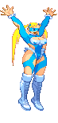

With Visual Studio Code, this has been my first time using the application and apart from a few mistakes which at the end I understand afterwards. After the three weeks I started to grasp the feel of using VSC to the end of it. And that reflected on my work shown. Although I feel it wouldn’t be unto industry standards. I feel I could use the application without or little mistakes.
To myself who has only just started coding I felt the tools were appropriated for the task ahead (Website design) Trello is a tool to be used so you know what the designer needs/needed to be done on a specific day. And it can be easily accessed via their website for the user’s comfort. Visual Studio Code can be used to see if the designers website (the current project in question) can/ is working properly without bugs and if there is. The program instantly informs the user that the code needs to be checked. This allows the code to run properly and function as required. And so gets the user to check to see if the code is ALWAYS functioning and without faults, which is good practice for all designers in the field of coding. To check to see if their work functions properly from start to finish.
As for my actual first website design, I would say yes I am happy with it. Is it perfect no. I felt I wanted too much for my design of my website (wanting it to look in a professional style with a moving gif background and gif pictures because I wanted it to be something different from everyone else’s. Although through modifying my website I did end up with a working gif background on all pages. (so that made me happy) I felt it looked crowded on some pages and if I had a chance to think it over. I would go over each page and see what needs modifying. To make it professional. BUT otherwise one my first on website designing using Visual Studio Code and CSS I am quite happy with the outcome. I have music on my index page, which works, so i’m quite happy about that. But on the second or third try I will have learned what I needed to change to make it stand out better.
One thing I wanted to add, but couldn’t get to work was a button on the bottom of the page so the user didn’t have to scroll back up to the top to change pages. At the time of the website design I felt it was too crowded (because I tried to use a moving gif picture) as the button. But I felt that it overtook the page and people might not have used it. So I took it out. I also probably would think of changing the colour to the links of the references (if I could) to a different colour to make them stand out better against the background. As my current background has a range of different dark colours and the link to the reference colour is purple, which didn’t work well on my background. Although the reference links themselves do work.
Firstly and most importantly the main aspect would be the research. This is where the designer would gather all the relevant data (images/links/music) into a folder so they can use it throughout the entire project. And if need be fall back onto if they are stuck. Secondly they need to create a flow board or mood board to have ideas, this helps them influence how the page will flow (index to page 1 etc) Some designers will jot their designs onto paper, then scan them or take a photograph to allow a digital copy in their folder. Others will use other tools/applications such as Photoshop/Illustrator to see how the website will flow. The main process will be using tools such as Visual Studio Code or CSS to allow the modifying and creation of the website design. This process uses the coding aspect of Javascript used in both applications to create the website While opening a new file, the designer would have to indicate the name of the file type like with .jpg and .mp3, they would have to change the file first to .html then once starting type html.5 on the code aspect on VSC (Visual Studio Code). This change allows the user to start implicating code changes while in .html mode.
